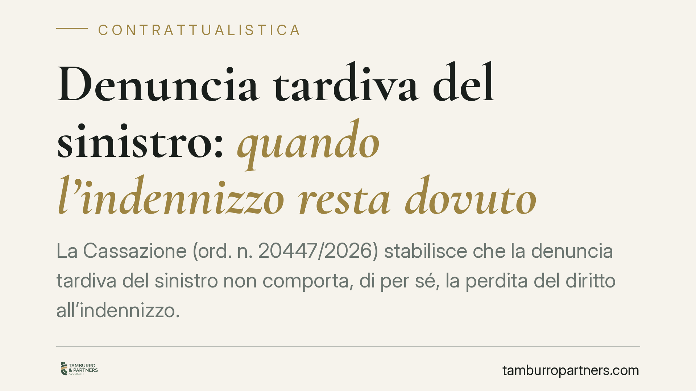

Denuncia tardiva del sinistro: quando l'indennizzo resta dovuto
La Cassazione (ord. n. 20447/2026) stabilisce che la denuncia tardiva del sinistro non comporta, di per sé, la perdita del diritto all'indennizzo. La decadenza scatta solo in presenza di dolo dell'assicurato; in caso di semplice colpa, l'assicuratore può al più ridurre l'importo, ma soltanto provando un danno concreto derivato dal ritardo.

Il caso
Un subappaltatore richiede l'indennizzo alla propria compagnia assicurativa dopo un sinistro denunciato oltre i termini contrattuali. La Corte d'appello nega il risarcimento ritenendo decaduto il diritto per la tardività della comunicazione.
La Terza Sezione Civile della Cassazione, con l'ordinanza n. 20447 del 17 giugno 2026, ribalta l'impostazione: il ritardo, in assenza di intento fraudolento, non estingue automaticamente il diritto dell'assicurato.
Inquadramento normativo
Il punto di partenza è l'art. 1913 del Codice civile, che impone all'assicurato di dare avviso del sinistro all'assicuratore entro tre giorni da quando ne ha avuto conoscenza (salvo diverso termine contrattuale).
La sanzione per l'inosservanza è disciplinata dall'art. 1915 c.c., che distingue nettamente due situazioni:
- Omissione dolosa (comma 1): l'assicurato che dolosamente non adempie all'obbligo di avviso perde il diritto all'indennità.
- Omissione colposa (comma 2): se l'inadempimento è dovuto a semplice colpa, l'assicuratore ha diritto solo a ridurre l'indennità in ragione del pregiudizio sofferto.
Il "dolo" rilevante va letto alla luce dell'art. 43 del Codice penale: non basta la consapevolezza del ritardo, occorre la volontà di arrecare un danno all'assicuratore o di trarne un vantaggio indebito. La Cassazione ribadisce che la decadenza totale è conseguenza eccezionale, riservata ai soli comportamenti fraudolenti.
Implicazioni pratiche
La pronuncia ridistribuisce con chiarezza l'onere della prova a carico della compagnia.
Per far valere la decadenza totale, l'assicuratore deve dimostrare il dolo dell'assicurato: un ritardo, anche consistente, non è di per sé prova di malafede.
Per ottenere la sola riduzione dell'indennizzo in caso di colpa, non è sufficiente invocare il ritardo in astratto. La compagnia deve provare un pregiudizio concreto ed effettivo derivato dalla tardività: ad esempio l'impossibilità di accertare le cause del sinistro, la perdita di elementi di prova o l'aggravamento del danno.
In assenza di tale prova, l'indennizzo resta dovuto per intero, nonostante la denuncia tardiva.
Per l'assicurato, ciò significa che un errore nei tempi di comunicazione non equivale a perdere ogni tutela. Resta comunque opportuno rispettare i termini: la giurisprudenza protegge chi ha agito in buona fede, non chi ignora deliberatamente gli obblighi contrattuali.
Per le imprese — in particolare appaltatori e subappaltatori, spesso esposti a sinistri in cantiere — la decisione è rilevante nella gestione del contenzioso con le compagnie. Le clausole contrattuali che prevedono la "perdita del diritto" per il semplice ritardo vanno lette in modo conforme all'art. 1915 c.c.: non possono trasformare una colpa in causa automatica di decadenza.
Cosa fare in concreto
- Denunciate il sinistro nei termini di polizza. Verificate caso per caso il termine previsto dal contratto, che può differire dai tre giorni di legge.
- Documentate il momento della conoscenza del sinistro. Il termine decorre da quando ne avete avuto effettiva cognizione: conservate evidenze di date e circostanze.
- Se la denuncia è tardiva, non date per persa la pratica. Verificate se la compagnia contesta dolo (decadenza) o colpa (sola riduzione) e su quali prove si fonda.
- Pretendete la prova del pregiudizio concreto. In caso di riduzione dell'indennizzo, chiedete che l'assicuratore dimostri quale danno effettivo gli abbia causato il ritardo.
- Rivedete le clausole di polizza. Consigliamo di sottoporre a verifica le condizioni che equiparano il ritardo colposo alla perdita totale del diritto, verificandone la conformità alla norma.
---
*Contributo informativo a cura di Tamburro & Partners - Avv. Giuseppe Tamburro. Non costituisce parere legale.*
Ogni contratto ha il suo equilibrio.
Se vuoi una revisione delle clausole o una redazione su misura, scrivi allo studio. Ti rispondiamo entro un giorno lavorativo.